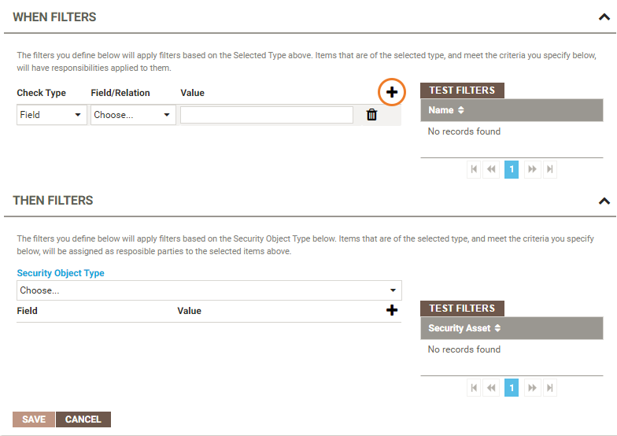
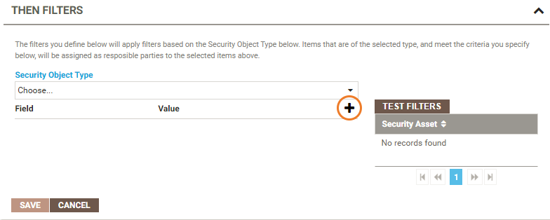

Open topic with navigation
Assigning users or groups to responsibilities
After you have created a responsibility type and assigned permissions, you can establish rules to further tailor the responsibility assignment to specific users or groups.
For example, you may have created a Report Viewer responsibility type, and want to assign a particular report to a specific person within your organization, such as assigning a balance sheet report to the company accountant. The following steps walk through this example:
- Click the Administration icon on the left of the screen then select Responsibilities.
- From the Responsibility Types panel, select the responsibility to which you want to assign a rule.
- Click the Add button in the top right corner of the Rules panel.
- Type a Name for the rule. For example, "Assign balance sheet to accountant".
- From the Selected Type list, choose the relevant asset type, for example Glossary: Report.
- You can use the When and Then filters to write an If / Then statement to further define your rule:
- Click the Add button in the top right corner of the When Filters panel:

- Select Report Name from the Field/Relation list.
- In the Value field, type the name of the report, for example "Balance sheet".
Tip: The entries that you make in the When Filters panel specify the "If" part of the If / Then statement; in this case, if the report name is "Balance sheet", then the specified rule should be followed.
- Click the Test Filter button to verify that your filter selections are working properly. If your test returns a value, you can be confident that your entries are correct.
- In the Then Filters panel, select a Security Object Type, for example User.
- Click the Add button in the Then Filters panel:

- From the Field list, select Name.
- In the Value field, for this example, select the name of the user to which you want to assign the rule.
Tip: The selections that you make in the Then Filters panel represent the "Then" part of your If / Then statement; in this case, if the report name is "Balance sheet", then assign the report to the selected user.
- Again, click the Test Filters button to check that a value is returned.
- Click Save to save your new rule.
Workflows are driven by responsibilities. For example, a user with the responsibility type of "Approver" may be required to review a new Business Term before it is entered into the system. A "Certifier" may then be responsible for validating that the relevant metadata supporting the new Business Term has been added. For more information on establishing workflows, see Establishing workflows.